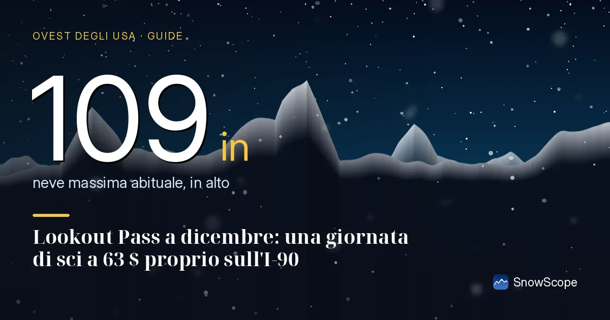

Lookout Pass a dicembre: una giornata di sci a 63 $ proprio sull'I-90
Lookout Pass si trova proprio sulla linea di confine tra l'Idaho e il Montana sull'I-90, con uno skipass per adulti feriale a 63 $ se prenoti in anticipo. I pendii superiori accumulano neve affidabile entro dicembre, ma la base rimane sottile fino dopo Natale.
Le previsioni neve in tempo reale per Lookout Pass nell'app SnowScopeAltezza neve, allerte powder e mappa 3D, gratis.
Dati essenziali: posizione, terreno, prezzo dello skipass
Lookout Pass è una piccola stazione che puoi raggiungere uscendo dall'I-90, situata tra Wallace, Idaho e l'area di Missoula. Il terreno cartografato va da 1.374 m a 1.875 m—un dislivello di 501 m—con 5 impianti e circa 37 km di piste.
Per la stagione 2026-27, prenota il tuo skipass feriale in anticipo a 63 $ (o 66 $ alla cassa). I fine settimana salgono a 75 $ prenotati, 78 $ alla cassa. Il periodo festivo costa 79 $ o 82 $. Niente sorprese: prezzi diretti che premiano un po' di pianificazione.

Dove si trova la neve a dicembre
Inizio dicembre è difficile alla base: il 1º dicembre tipico vede 29 cm, e solo il 20% degli inverni raggiunge 50 cm entro quella data. A mezza montagna (1.624 m) è più clemente—il 50% degli inverni ha 50 cm o più—ma la cima (1.875 m) è la migliore, con il 65% degli inverni solidi in quella data.
Entro il 15 dicembre la situazione cambia. La mezza montagna di solito mantiene 75 cm, con l'85% degli inverni sopra 50 cm. La cima raggiunge in media 95 cm, e il 96% degli inverni rimane al di sopra di quella soglia. La base rimane ancora indietro a 45 cm, anche se il 39% degli inverni raggiunge 50 cm.
Natale vede la base recuperare a 59 cm nel 61% degli inverni. La mezza montagna raggiunge 97 cm con il 93% di affidabilità, e la cima si attesta a 122 cm con il 96% degli inverni sopra 50 cm. Per San Silvestro, la mezza montagna si situa a 114 cm, quasi certo da sciare.

Cosa è cambiato negli ultimi decenni
Nei primi 15 inverni registrati (1980-81 al 1994-95), la mezza montagna il 15 dicembre raggiungeva in media 84 cm e ogni singolo inverno superava 50 cm. Negli ultimi 15 inverni (2011-12 al 2025-26), il valore tipico è sceso a 66 cm, con il 73% degli inverni che superano quella soglia.
Lo scorso inverno è stato notevolmente scarso: la mezza montagna aveva solo 34 cm il 15 dicembre, anche se entro Natale è salito a 56 cm.
Come si confronta: Schweitzer e Snowbowl
Schweitzer Mountain, sopra Sandpoint, ha un terreno più grande e neve più profonda in cima: il 15 dicembre di solito mostra 138 cm sulla vetta rispetto ai 95 cm di Lookout. Ma la mezza montagna di Schweitzer (1.585 m) raggiunge in media 90 cm in quella data—solo 12 cm più di Lookout. Un 3-Pack di Schweitzer costa 249 $, o 83 $ al giorno.
Montana Snowbowl vicino a Missoula addebita 78 $ nei giorni feriali e 85 $ nei fine settimana. La sua mezza montagna (1.909 m) il 15 dicembre di solito mantiene 76 cm—lo stesso della mezza montagna di Lookout. Lo skipass feriale di Lookout a 63 $ lo rende l'opzione più economica di 15 $ al giorno, con neve di mezza montagna equivalente.
Quando andare e cosa aspettarsi
Inizio dicembre è una scommessa: la neve buona (definita come una media settimanale di 50 cm o più) appare solo nel 30-37% degli inverni nelle prime due settimane. Entro fine dicembre—dal 14º in poi—quella percentuale sale al 52-65%, il che significa che la seconda metà del mese è molto più probabile che fornisca neve.
Gli impianti superiori sono la tua rete di sicurezza prima di Natale. La base può essere sottile, con erba esposta o copertura sottile che nasconde rocce. Dopo Natale, mentre la base si costruisce, guadagni più opzioni. Wallace, la piccola città mineraria sotto il passo, ha motel economici e diner se vuoi stare vicino agli impianti.
Consigli per sciatori
- Prenota una data feriale in anticipo per bloccare lo skipass a 63 $; i fine settimana e le festività costano molto di più.
- Scia sugli impianti superiori a inizio dicembre. La cima della montagna si attesta a 95 cm il 15 dicembre in un inverno tipico, mentre la base può essere scoperta. Pianifica le tue piste più in alto.
- Se vai tra il 14-27 dicembre, la neve buona appare nel 52-65% degli inverni a mezza montagna. La seconda metà del mese è molto più affidabile della prima metà.
- Controlla il rapporto del passo dell'I-90 prima di guidare. I requisiti di catene appaiono durante le tempeste; il passo si situa a 1.427 m e si chiude occasionalmente in inverno.
- Gli ultimi 15 inverni sono stati più magri dei primi 15 nel registro dei dati: pianifica per la neve ma verifica le condizioni in tempo reale prima di prenotare.
Su questi numeri
Le altezze neve delle località sono la neve più alta sui pendii superiori alla data indicata; sono stime per un'area, non una misura in un punto. Le previsioni possono cambiare. Leggi sempre il bollettino valanghe ufficiale prima del fuoripista.
Bollettini valanghe ufficiali: avalanche.org (US national portal)
Cita questo articolo
Per ricerca, didattica o stampa: numeri e grafici sono liberamente riutilizzabili con licenza CC BY 4.0 citando così.
SnowScope (2026), Lookout Pass a dicembre: una giornata di sci a 63 $ proprio sull'I-90, https://snowscope.app/blog/it/2026/11/lookout-pass-december-skiing-63-dollar-midweek.html, consultato il 2026-11-14
SnowScope (Atlas Labs). (2026, November 14). Lookout Pass a dicembre: una giornata di sci a 63 $ proprio sull'I-90. SnowScope snow reports. https://snowscope.app/blog/it/2026/11/lookout-pass-december-skiing-63-dollar-midweek.html
BibTeX
@misc{snowscope2026lookoutpassdecemberskiin,
author = {{SnowScope (Atlas Labs)}},
title = {Lookout Pass a dicembre: una giornata di sci a 63 $ proprio sull'I-90},
year = {2026},
month = nov,
howpublished = {\url{https://snowscope.app/blog/it/2026/11/lookout-pass-december-skiing-63-dollar-midweek.html}},
note = {Published 2026-11-15 09:34 UTC; accessed 2026-11-14}
}· CC BY 4.0 · Metodi, dati e strumenti →
Lookout Pass: neve e temperatura per quota, quest'inverno vs lo scorso (strumenti) →
Segui Lookout Pass
Gratis: un messaggio quando arriva la neve e il meteo ogni mattina.